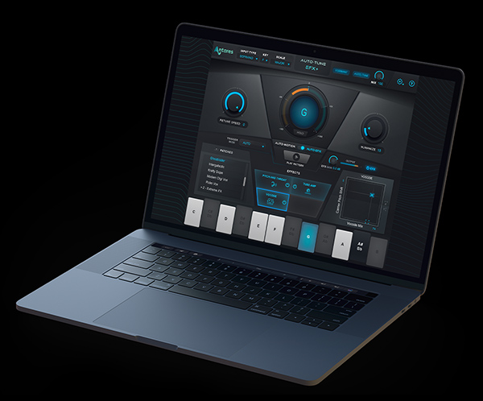

Auto-Tune EFX+ is an all-in-one vocal production tool combining industry-standard Auto-tune pitch correction, the extensive Auto-EFX multi-effects rack with vintage vocoder emulations, and a new, improved Auto-Motion pitch-shifting melodic pattern generator.

Highlights include:
Real-time Auto-Tune pitch correction with fully adjustable Retune Speed and Humanize controls.
Low-latency performance on stage or in the studio.
Duet: Realistic doubling with adjustable pitch and timing variation
Tube Amp: Analog tube distortion modeling
Mutate: Ring-modulated audio mutation
Filter: Highpass filter for EQ and special effects
Vocode: Ten authentically modeled vintage vocoder emulations
Pitch and Throat: Real-time pitch and formant shifting
Duet: Realistic doubling with adjustable pitch and timing variation
Tube Amp: Analog tube distortion modeling
Mutate: Ring-modulated audio mutation
Filter: Highpass filter for EQ and special effects
Library of over 100 multi-effects patch presets crafted by leading producers, composers, and sound designers.
The Auto-Motion melodic pattern generator lets you create patterns and hooks by automatically pitch-shifting your vocal or instrumental tracks.
Compatible with the Auto-Key plugin (sold separately) for automatic key and scale detection.